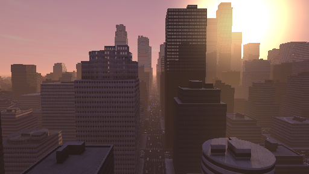

Three.js 和 Shadertoy
Shadertoy是一个著名的网站，托管了许多惊人的着色器实验。人们经常会问如何将这些着色器与 Three.js 一起使用。
重要的是要认识到它被称为 ShaderTOY 是有原因的。一般来说，shadertoy 着色器并不是关于最佳实践的。它们更像是一种有趣的挑战，类似于 dwitter（在 140 个字符内编写代码）或 js13kGames（在 13k 或更少字节中制作游戏）。
在 Shadertoy 的情况下，这个谜题是，编写一个函数，使给定像素位置输出一个有趣的颜色。这是一种有趣的挑战，许多结果都非常惊人。但是，这并不是最佳实践。
对比 这个令人惊叹的 shadertoy 着色器，它绘制了整个城市

在我的显卡上全屏运行时，它大约每秒运行 5 帧。将其与像《城市：天际线》这样的游戏进行对比

这款游戏在同一台机器上以每秒30-60帧运行，因为它使用了更多传统技术，比如用三角形绘制的带有纹理的建筑物等…
不过，让我们来回顾一下如何在 three.js 中使用 Shadertoy 着色器。
如果你 在 shadertoy.com 上选择“New”，这是默认的 Shadertoy 着色器，至少截至 2019 年 1 月是这样。
// By iq: https://www.shadertoy.com/user/iq
// license: Creative Commons Attribution-NonCommercial-ShareAlike 3.0 Unported License.
void mainImage( out vec4 fragColor, in vec2 fragCoord )
{
// Normalized pixel coordinates (from 0 to 1)
vec2 uv = fragCoord/iResolution.xy;
// Time varying pixel color
vec3 col = 0.5 + 0.5*cos(iTime+uv.xyx+vec3(0,2,4));
// Output to screen
fragColor = vec4(col,1.0);
}
关于着色器，有一点很重要要理解，那就是它们是用一种叫做 GLSL（图形库着色语言）的语言编写的，这种语言专为 3D 数学设计，并包含特殊类型。上面我们看到 vec4、vec2、vec3 作为三种这样的特殊类型。一个 vec2 有 2 个值，一个 vec3 有 3 个值，一个 vec4 有 4 个值。它们可以用多种方式进行访问。最常见的方式是通过 x、y、z 和 w，如同
vec4 v1 = vec4(1.0, 2.0, 3.0, 4.0); float v2 = v1.x + v1.y; // adds 1.0 + 2.0
与 JavaScript 不同，GLSL 更像 C/C++，变量必须声明其类型，因此不是 var v = 1.2;，而是 float v = 1.2; 声明 v 为浮点数。
详细解释 GLSL 超出了本文的范围。如需快速概览，请参阅 这篇文章，并可以进一步阅读 这个系列。
需要注意的是，至少截至 2019 年 1 月，shadertoy.com 仅关注 片段着色器。片段着色器的职责是根据像素位置输出该像素的颜色。
看上面的函数，我们可以看到着色器有一个名为 out 的参数 fragColor。out 代表 output。这是函数期望提供值的一个参数。我们需要将其设置为某种颜色。
它还有一个名为 in 的 fragCoord（输入）参数。这是即将绘制的像素坐标。我们可以使用该坐标来决定颜色。如果我们绘制的画布是 400x300 像素，那么函数将被调用 400x300 次，也就是 120,000 次。每次 fragCoord 都会是不同的像素坐标。
代码中使用了另外两个未定义的变量。一个是 iResolution。它被设置为画布的分辨率。如果画布是 400x300，那么 iResolution 将是 400,300，因此随着像素坐标的变化，uv 会从 0.0 变化到 1.0，覆盖整个纹理。使用归一化值通常会使事情更容易，因此大多数 shadertoy 着色器都是从这样的代码开始的。
。着色器中另一个未定义的变量是 iTime。它表示自页面加载以来的时间，以秒为单位。
在着色器术语中，这些全局变量被称为 uniform 变量。它们被称为 uniform，因为它们不会改变，从一次着色器迭代到下一次迭代都保持一致。需要注意的是，它们都是特定于 shadertoy 的。它们不是 官方 的 GLSL 变量。它们是 shadertoy 的制作者发明的变量。
Shadertoy 文档定义了更多变量。现在让我们写一些处理上面着色器中使用的两个变量的内容。
首先要做的是让我们创建一个填满画布的单个平面。如果你还没读过，我们在背景文章中做过这个，所以让我们拿那个示例，但去掉立方体。它很短，所以这里是全部内容
function main() {
const canvas = document.querySelector('#c');
const renderer = new THREE.WebGLRenderer({antialias: true, canvas});
renderer.autoClearColor = false;
const camera = new THREE.OrthographicCamera(
-1, // left
1, // right
1, // top
-1, // bottom
-1, // near,
1, // far
);
const scene = new THREE.Scene();
const plane = new THREE.PlaneGeometry(2, 2);
const material = new THREE.MeshBasicMaterial({
color: 'red',
});
scene.add(new THREE.Mesh(plane, material));
function resizeRendererToDisplaySize(renderer) {
const canvas = renderer.domElement;
const width = canvas.clientWidth;
const height = canvas.clientHeight;
const needResize = canvas.width !== width || canvas.height !== height;
if (needResize) {
renderer.setSize(width, height, false);
}
return needResize;
}
function render() {
resizeRendererToDisplaySize(renderer);
renderer.render(scene, camera);
requestAnimationFrame(render);
}
requestAnimationFrame(render);
}
main();
正如背景文章中解释的，一个OrthographicCamera使用这些参数，并且一个2单位的平面就能填满画布。目前我们得到的只是一个红色的画布，因为我们的平面使用了红色MeshBasicMaterial。
现在我们有了可以工作的内容，让我们添加shadertoy着色器。
const fragmentShader = `
#include <common>
uniform vec3 iResolution;
uniform float iTime;
// By iq: https://www.shadertoy.com/user/iq
// license: Creative Commons Attribution-NonCommercial-ShareAlike 3.0 Unported License.
void mainImage( out vec4 fragColor, in vec2 fragCoord )
{
// Normalized pixel coordinates (from 0 to 1)
vec2 uv = fragCoord/iResolution.xy;
// Time varying pixel color
vec3 col = 0.5 + 0.5*cos(iTime+uv.xyx+vec3(0,2,4));
// Output to screen
fragColor = vec4(col,1.0);
}
void main() {
mainImage(gl_FragColor, gl_FragCoord.xy);
}
`;
上面我们声明了之前提到的两个 uniform 变量。然后我们插入了来自 shadertoy 的 shader GLSL 代码。最后我们调用了 mainImage 并传入了 gl_FragColor 和 gl_FragCoord.xy。gl_FragColor 是一个官方的 WebGL 全局变量，shader 负责将其设置为当前像素所需的颜色。gl_FragCoord 是另一个官方的 WebGL 全局变量，它告诉我们当前正在选择颜色的像素的坐标。
然后我们需要设置 three.js 的 uniforms，以便向 shader 提供值。
const uniforms = {
iTime: { value: 0 },
iResolution: { value: new THREE.Vector3() },
};
THREE.js 中的每个 uniform 都有 value 参数。该值必须与 uniform 的类型匹配。
然后我们将片段着色器和统一变量传递给一个 ShaderMaterial.
-const material = new THREE.MeshBasicMaterial({
- color: 'red',
-});
+const material = new THREE.ShaderMaterial({
+ fragmentShader,
+ uniforms,
+});
，并且在渲染之前我们需要设置统一变量的值
-function render() {
+function render(time) {
+ time *= 0.001; // convert to seconds
resizeRendererToDisplaySize(renderer);
+ const canvas = renderer.domElement;
+ uniforms.iResolution.value.set(canvas.width, canvas.height, 1);
+ uniforms.iTime.value = time;
renderer.render(scene, camera);
requestAnimationFrame(render);
}
注意：我完全不知道为什么
iResolution是一个vec3，以及第三个值是什么在 shadertoy.com 上没有文档记录。它在上面没有使用，所以现在暂时将其设置为 1。¯\_(ツ)_/¯
这 与我们在 Shadertoy 上看到的新着色器相匹配，至少截至 2019 年 1 月 😉。上面的着色器在做什么？
uv的值从 0 变到 1。cos(uv.xyx)给我们提供了 3 个余弦值作为vec3。一个用于uv.x，另一个用于uv.y，再另一个用于uv.x。- 加入时间后，
cos(iTime+uv.xyx)使它们动画化。 - 像在
vec3(0,2,4)中那样加入cos(iTime+uv.xyx+vec3(0,2,4))会偏移余弦波。 cos的范围从 -1 到 1，因此0.5 * 0.5 + cos(...)将 -1 <-> 1 转换为 0.0 <-> 1.0。- 然后将结果用作当前像素的 RGB 颜色
一个小的改变会让观察余弦波更容易。现在 uv 只是从 0 到 1。余弦函数在 2π 时重复，所以我们把它乘以 40.0，使其从 0 到 40。这样它大约会重复 6.3 次。
-vec3 col = 0.5 + 0.5*cos(iTime+uv.xyx+vec3(0,2,4)); +vec3 col = 0.5 + 0.5*cos(iTime+uv.xyx*40.0+vec3(0,2,4));
在下面计数，我看到大约 6.3 次重复。由于 +vec3(0,2,4) 的偏移 4，我们可以看到红色之间的蓝色。否则蓝色和红色会完全重叠，形成紫色。
知道输入是多么简单，然后看到像城市运河、森林、蜗牛、蘑菇这样的结果，使得这个挑战显得更加令人印象深刻。希望它们也能清楚地说明，为什么与用三角形制作场景的更传统方法相比，这通常不是正确的方法。为了计算每个像素的颜色，需要进行大量数学运算，这就意味着这些示例运行非常慢。
一些 Shadertoy 着色器使用纹理作为输入，比如这个。
// By Daedelus: https://www.shadertoy.com/user/Daedelus
// license: Creative Commons Attribution-NonCommercial-ShareAlike 3.0 Unported License.
#define TIMESCALE 0.25
#define TILES 8
#define COLOR 0.7, 1.6, 2.8
void mainImage( out vec4 fragColor, in vec2 fragCoord )
{
vec2 uv = fragCoord.xy / iResolution.xy;
uv.x *= iResolution.x / iResolution.y;
vec4 noise = texture2D(iChannel0, floor(uv * float(TILES)) / float(TILES));
float p = 1.0 - mod(noise.r + noise.g + noise.b + iTime * float(TIMESCALE), 1.0);
p = min(max(p * 3.0 - 1.8, 0.1), 2.0);
vec2 r = mod(uv * float(TILES), 1.0);
r = vec2(pow(r.x - 0.5, 2.0), pow(r.y - 0.5, 2.0));
p *= 1.0 - pow(min(1.0, 12.0 * dot(r, r)), 2.0);
fragColor = vec4(COLOR, 1.0) * p;
}
将纹理传入着色器类似于将纹理传入普通材质，但我们需要在 uniforms 上设置纹理。
首先，我们将为纹理在着色器中添加 uniform。在 GLSL 中它们被称为 sampler2D。
const fragmentShader = ` #include <common> uniform vec3 iResolution; uniform float iTime; +uniform sampler2D iChannel0; ...
然后，我们可以像在这里介绍的那样加载纹理，并为 uniform 指定值。
+const loader = new THREE.TextureLoader();
+const texture = loader.load('resources/images/bayer.png');
+texture.minFilter = THREE.NearestFilter;
+texture.magFilter = THREE.NearestFilter;
+texture.wrapS = THREE.RepeatWrapping;
+texture.wrapT = THREE.RepeatWrapping;
const uniforms = {
iTime: { value: 0 },
iResolution: { value: new THREE.Vector3() },
+ iChannel0: { value: texture },
};
到目前为止，我们一直在使用 Shadertoy 着色器，就像它们在 Shadertoy.com 上的使用方式一样，即绘制以覆盖画布。不过，我们没有理由仅限于这种用例。需要记住的重要一点是，人们在 Shadertoy 上编写的函数通常只接受一个 fragCoord 输入和一个 iResolution。fragCoord 不一定要来自像素坐标，我们也可以使用其他如纹理坐标之类的东西，然后可以将它们像使用其他纹理一样使用。使用函数生成纹理的这种技术通常被称为 程序化纹理。
让我们修改上面的着色器来实现这个。最简单的方法可能是使用 three.js 通常提供的纹理坐标，将它们乘以 iResolution 并将结果传入 fragCoords。
为此，我们添加一个 varying。varying 是一个从顶点着色器传入片段着色器的值，在顶点之间会被插值（或变化）。要在片段着色器中使用它，我们需要声明它。three.js 将其纹理坐标称为 uv，在前面加上 v 表示 varying。
...
+varying vec2 vUv;
void main() {
- mainImage(gl_FragColor, gl_FragCoord.xy);
+ mainImage(gl_FragColor, vUv * iResolution.xy);
}
然后我们还需要提供我们自己的顶点着色器。这里有一个相当常见的最小 three.js 顶点着色器。Three.js 会声明并提供以下值：uv、projectionMatrix、modelViewMatrix 和 position。
const vertexShader = `
varying vec2 vUv;
void main() {
vUv = uv;
gl_Position = projectionMatrix * modelViewMatrix * vec4( position, 1.0 );
}
`;
我们需要将顶点着色器传递给 ShaderMaterial
const material = new THREE.ShaderMaterial({
vertexShader,
fragmentShader,
uniforms,
});
我们可以在初始化时设置 iResolution 的 uniform 值，因为它之后不会再改变。
const uniforms = {
iTime: { value: 0 },
- iResolution: { value: new THREE.Vector3() },
+ iResolution: { value: new THREE.Vector3(1, 1, 1) },
iChannel0: { value: texture },
};
并且我们不再需要在渲染时设置它
-const canvas = renderer.domElement; -uniforms.iResolution.value.set(canvas.width, canvas.height, 1); uniforms.iTime.value = time;
否则，我从 关于响应性的文章 中复制了原始摄像机和用于设置 3 个旋转立方体的代码。结果:
我希望这至少能让你开始了解如何在 three.js 中使用 shadertoy 着色器。再次强调，重要的是要记住，大多数 shadertoy 着色器更多的是一种有趣的挑战（用一个函数绘制所有内容），而不是实际以高性能方式显示内容的推荐方式。不过，它们仍然很棒、令人印象深刻、美丽，并且你可以通过观察它们的工作原理学到很多东西。